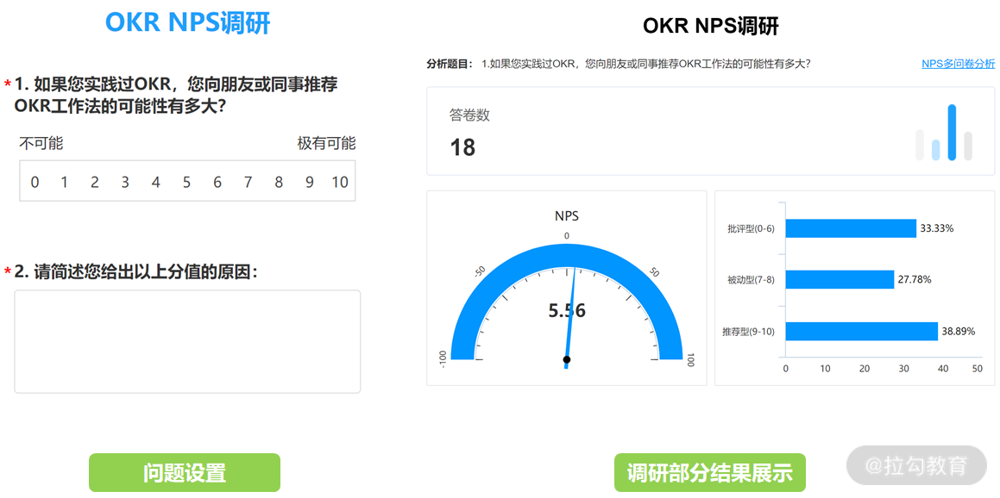

- 00 OKR 工作法：组织目标管理的神器.md.html
- 01 目标管理发展：OKR 之前，大家都在用什么管理组织目标？.md.html
- 02 OKR 价值：为什么互联网公司都在用 OKR？.md.html
- 03 OKR 与战略：OKR 如何解决组织增长问题？.md.html
- 04 OKR 生成：各层级的 OKR 要遵循什么规律？.md.html
- 05 O：什么样的 O 得领导赏识？.md.html
- 06 KR ：写好 KR 的万能公式.md.html
- 07 案例实战：教你写出高质量的 OKR.md.html
- 08 流程：你应该这样制定、管理 OKR!.md.html
- 09 OKR 与 KPI 的区别和联系.md.html
- 10 激励：如何用 OKR 激活你的团队？.md.html
- 11 文化：OKR 文化的塑造和沉淀.md.html
- 12 变革：OKR 转型难点及解决方案.md.html
- 13 加餐 OKR 填写模板及案例.md.html
- 结束语 OKR 工作法：制胜互联网下半场.md.html
- 捐赠
12 变革：OKR 转型难点及解决方案
你好，我是留留。
通过前面课时的学习，你可以发现 OKR 作为一种新的目标管理方法，有着其所倡导的价值理念和管理实践，这样的文化特征进入到任何一个组织都会带来变化。
然而，人天生对于变化是排斥的，尤其在组织原有文化的裹挟下，会更加抗拒新兴的理念和方法。所以，OKR 转型一定会面临阻力和挑战。
同时，我们也会发现优秀的组织仍然会坚持“长期主义”，坚决做出文化的演进和升级。 比如阿里和腾讯都在 2019 年发布了文化 3.0，京东同年也对文化价值观做了新的调整，目的都是让组织的文化能及时适应当下的环境，持续获得组织的成功。所以，我们要坚定 OKR 转型的决心，告别陈旧的管理模式，掌握科学的方法，做好 OKR 落地的变革管理。
那么，我们在 OKR 落地时会遇到哪些难点？又可以通过什么方式来解决这些困难，以促成 OKR 更加顺利的变革呢？
这就是本课时我要帮你解决的问题，我们先来看 OKR 转型的整体推进框架。
OKR 转型的顶层设计

首先，我们把一个组织抽象成一个系统，在这个系统中，还包括了人以及人与人之间的交互。
那么，当一个变化，如 OKR 转型，进入到这个组织系统，就会对这三个部分带来调整，同时也会面临这三个部分的落地挑战，这些难点在于：
- 如何以组织的形式落地 OKR？
- 如何让人能更容易产生应用 OKR的行为？
- 如何让 OKR更有效地扩散开？
换句话说，我们可以从组织系统、人、交互三个维度入手，实施全面改进，引入好的方法，解决以上难点，降低 OKR 的变革“阻力”，促成 OKR 更好落地。
基于这个 OKR 转型的顶层设计框架，我们先来看，在一个组织系统中，做事情的基本逻辑是什么呢？
如何以组织的形式落地 OKR
在正式组织里做任何事情，我们都是回到目标以及相匹配的职责上。 什么意思呢？
我们很多人都喜欢在豆瓣、微信社群、小红书聚集，这些基于情感、兴趣、爱好组成的社区形式，就是非正式的组织。在非正式组织里，没有所谓的压力和效率，想聊什么就聊，想来就来，想走就走。
但是正式组织则不同，正式组织是为了实现目标而存在，而为了实现目标，继而会设计很多角色来承担实现目标的职责，然后通过分工给到具体的执行人。

（京东内部 OKR Master 角色的职责定义，供参考）
举个例子。我在京东某部门推动落地 OKR 时，首先定义了一个名为“OKR Master”的角色，并赋予了该角色需要落地 OKR 的职责，然后在该部门以业务条线的维度找承担该职责的人。当时，我一共找到了 20 多个团队的 Leader 来进行分工承接。
接下来，我自己和这 20 多位 OKR Master 成立了OKR 变革小组，通过设立OKR 变革小组的工作目标，来带领部门 200 多人进行 OKR 转型。在这里，我把变革小组的阶段性目标中的关键量化指标分享给你（如下），你可以参考作为 OKR 变革时的核心过程指标。
- OKR 覆盖度
- OKR NPS
- OKR 实现过程管理能力水平
OKR 实现过程管理能力水平，就是 OKR 的文化监控做法《具体参考 11 课时 OKR 文化建设里所讲的如何沉淀 OKR 文化》，这里着重介绍下 OKR 覆盖度和 OKR NPS。
设立 OKR 覆盖度指标的目的，是让 OKR 流程 100% 覆盖所有业务条线，让所有业务条线的工作目标的制定和过程管理都基于 OKR 来展开；此外，覆盖还包括每人都能用 OKR 来制定绩效目标，也就是让每个人基于 O 和 KR 的写法方法论来制定自己的OKR。

（OKR NPS 调研问卷问题设置及部分结果，供参考）
NPS（Net Promoter Score，净推荐值）原本是用来衡量用户向其他人推荐某个产品或服务可能性程度的指标，该指标可以用来说明用户对于某产品使用的满意度、喜好情况。
OKR 作为一个新的目标管理方法，到底能不能帮助组织解决问题，到底好不好，这真得听听长期在应用这套方法的当事人怎么说才行。就像产品真正解决了用户痛点问题后，用户就会非常喜欢并乐于推荐一样，OKR 若是真的非常有价值，那么运用这套方法的团队就会越来越接受，也会越来越满意，并乐于向其他人推荐这套工作方法。所以，OKR NPS 设立的目的，就是用来收集使用 OKR 这个方法的用户好差反馈，我们可以按照月度或者季度来收集该数据。
有了 OKR 覆盖度，可以确保组织中所有人都能把 OKR 用起来。然后通过 OKR NPS 来收集使用过程中的问题，做持续的问题识别和改进，最后再结合 OKR 实现过程管理能力水平，来塑造和沉淀 OKR 文化，这样就能全方位地推 OKR。
所以在推动 OKR 转型时，我们需要成立 OKR 变革小组，定角色、定职责，然后制定变革小组的工作目标。这样做就是在一个组织中，在以组织形式来推动 OKR，提高落地 OKR 的效率和成功率。
变革小组成立后，在按照计划推动 OKR 时，往往面临最大的问题，还是回到组织中的人身上，在人这个维度，我们又可以采用什么方法来降低 OKR 变革阻力呢？
如何让人更容易产生应用 OKR 的行为
涉及个体行为，有一个非常著名的公式，它来自斯坦福大学福格教授：B=MAT。
B：Behaviour，行为 M：Motivation，动机 A：Ability，能力 T：Trigger，触发
也就是说，个体的行为受到动机、能力和触发三个变量的综合影响。那么，在组织里，我们就需要从这三个变量切入，来解决人怎么才能更容易产生应用 OKR 的行为。
在动机维度，最重要的激励，我在<10 课时>和你分享过，组织中的激励机制和激励设计围绕 OKR 来做，就可以引导群体更有动力来使用 OKR。除了结合激励，变革的引入，还要说明能帮助组织解决什么问题，或者通过变革可以解决未来什么危机，这样的问题和危机感，要能从上往下地传递出来，增加组织中群体拥抱变化的紧迫感。
京东内部在启动 Big Boss 变革时，京东创始人刘强东曾说：“……在复杂的、多业态、多场景、碎片化、去中心化、还要满足客户极致的个性化需求下，必须有一套适应业务的管理体系和方法论。为了未来的发展做好准备，我们需要组织先行、方法先行，找到适合未来企业形态、业务形态的组织管理方法，所以我们要做 Big Boss，这才是 Big Boss 产生的背景……”
京东 Big Boss 变革体系，其中涉及的 Big Boss 工作法就是指 OKR 工作法。有了创始人从上往下带来的组织需要进行变革的意志，就可以更好激发公司全体人员做出改变的动力。
在能力维度，首先必须要让人具备 OKR 的整套理论知识和实践方法，也就是本专栏所提供的非常系统化的 OKR 落地管理法。此外，组织中的学习不是让人学多少，而是用多少。所以，除了做好培训，我们注意力一定是回到应用上，再根据“学习金字塔”（该方法把学习方式分为听课、阅读、现场示范、讨论、践行和教别人，不同的学习方式带来不同的学习效果转化，而教是最好的学），一个人对某个知识理解最为深刻，就是能讲出来或是教别人。
结合以上，我在京东内部会让实践 OKR 的团队，把自己团队实践的案例进行总结分享，一是看用 OKR 的情况，二是看理解 OKR 的深度。然后根据团队的 OKR 实践水平，进行专门的辅导，让组织中的人具备正确应用 OKR 的能力。
在触发维度，让人长期能被触发使用 OKR，靠的就是管理流程和机制，这一点我在 OKR 文化的建设和沉淀中已经详细进行了说明<参考 11 课时>。除此之外，在组织里讲究责任和权利，组织结构中职位越高的人，拥有越高的权利，相应也就拥有越大的影响力，所以在触发全员进行变革时，需要高层的加入和支持，利用高层来影响人群接受和使用 OKR。
在京东内部推 OKR 时，为了让高层支持 OKR 转型，我个人联合 HR 一起给部门 VP 进行了多次汇报，得到了 VP 的认可，并去影响 HR 侧的老板“游说”部门 VP 来支持 OKR 的推动。在后续战略会上，大领导表态用 OKR 来拆解战略，用 OKR 来管理项目过程，结合 OKR 来进行绩效和项目的复盘。如此在不同场合下，通过高层的影响力来触发人员要使用 OKR，就会让人倍增需要进行 OKR 变革的压力。在搞定了上层，有了一把手支持，推动 OKR 就会顺畅很多。
所以，从动机、能力和触发三个变量切入，运用好的实践，激发让人更能使用 OKR 的动机，提升人应用 OKR 的能力，持续触发影响人形成应用 OKR 的思维和习惯，这样就可以让组织中的群体更容易产生应用 OKR 的行为，促成 OKR 变革更易成功。
解决了人的行为维度，接下来，我们还需要思考的是，在一个组织中怎么更有效地进行 OKR 扩散和传播呢？
如何让 OKR 更有效地扩散开？
2020 年，是深圳经济特区成立 40 周年。在深圳特区建立 40 周年庆祝大会上，习主席说到“深圳用 40 年时间走过了国外一些国际化大都市上百年才能走完的历程”，可见深圳特区作为中国经济改革和对外开放的排头兵，获得了举世瞩目的成就。
我们要学习的是，40 年前国家推动改革开放的变革手段，就是用深圳作为试点，进而总结经济特区建设经验，提炼了方法论“实践是检验真理的唯一标准”后，才开始更广泛地推广改革开放，然后开始复制出苏南模式、乡镇企业模式、珠三角模式等等。
所以，在做变革时，为了避免上来就“一刀切”给组织带来的风险，我们需要先做试点，然后总结试点的成功经验，继而再规模化铺开。 同理，在组织中推动 OKR 变革，我们也需要按照这个步骤来实施，而作为 OKR 变革的试点，又该如何选择呢？

（罗杰斯创新扩模型）
上图的创新扩散模型，由美国埃弗雷特·罗杰斯（E.M.Rogers）提出。从该模型中，我们可以学习到，当一个变化引入一个群体后，群体中的个体拥抱变化的态度上会有明显差别，一般可分为创新者、初期采用者、早期大众、后期大众和落后者五类人。
由于群体中这五类人的存在，对于一个变化，进入一个群体后的扩散速度，就会有先后、快慢之分。 所以，为了降低变革阻力，我们不能上来就找落后者或后期大众来推动 OKR，那将会困难重重，在成本和效率上就会让变革失败。而是应该重点找到并激活整个组织中的创新者和初期采用者，通过他们作为 OKR 变革试点，然后总结试点的成功经验，联合团结他们把这些成功经验推广至其他群体，以此来更快地进行全组织有效的 OKR 变革扩张。

（个人培训，把京东 OKR 的部门落地成功经验分享铺向其他兄弟部门）
京东从 2019 年年中开始，选择了对 OKR 感兴趣和有热情的京东零售前台 3C 事业部、中台平台生态部等部门进行 OKR 试点。试点推广实践了半年之后，在 2020 年才开始大面积地铺向更多部门。而我部门作为实践 OKR 的排头兵，我就把实际在京东场景下推广 OKR 成功的方法论和经验带给了其他兄弟部门，从而更加规模化地去做京东 OKR 变革。
在这里，我特别想提醒你的是，每个组织的文化不同，制定目标的周期不同，人员水平不同，行业背景不同，所以我们不能完全“照抄”复制其他企业的 OKR 落地方法。一定要基于自己企业试点团队的实际情况，参考本专栏的 OKR 方法论和要素，总结形成适合自己企业落地 OKR 的经验，然后再铺向全组织，这样才是对于你的组织最有效的 OKR 变革扩散。而且，一定要能确保 OKR 在试点团队获得成功，如果连试点都失败，OKR 这种新兴的目标管理方法，想在组织中全面推动几乎是不可能的。
小结
以上，就是我们要进行 OKR 变革的三个重点攻坚方向。按照时间线的维度，我再帮你梳理一遍：首先在组织中要成立 OKR 变革小组，由变革小组来牵头做 OKR 试点，试点运营 OKR 一段时间后，需要基于试点总结提炼 OKR 解决的组织问题和带来的价值，然后设立 OKR 变革小组的工作目标，把 OKR 工作法推向全公司。
© 2019 - 2023 Liangliang Lee. Powered by gin and hexo-theme-book.